教授、博士生导师，同济大学交通运输规划与管理专业博士。主要利用多源数据研究公共交通规划与运营，以及多种出行方式的组合与优化。曾主持城市轨道交通接驳公交线网重构研究。
项目职责主持本项目，统筹网约车与公共交通出行关联模式识别、关联机理分析及协同运行调控研究。
乘客有时在网约车与公交、地铁之间作选择，有时也会在一次行程中接续使用两类服务。本项目研究这些出行关系在不同时间和地点如何变化，分析各类关联模式形成和转换的条件。
研究进一步从乘客与交通管理者的角度评估出行成本与效益，探讨如何判断理想的协同运行状态，以及如何通过运行调控改善两类服务的衔接。
教授、博士生导师，同济大学交通运输规划与管理专业博士。主要利用多源数据研究公共交通规划与运营，以及多种出行方式的组合与优化。曾主持城市轨道交通接驳公交线网重构研究。
项目职责主持本项目，统筹网约车与公共交通出行关联模式识别、关联机理分析及协同运行调控研究。
副教授、硕士生导师，博士。研究交通大数据挖掘、居民出行行为及其与城市空间形态的关系。曾主持陕西省自然科学基金项目，利用出租车轨迹识别潜在公交需求，研究公交服务与需求的匹配策略。
项目职责研究网约车与公共交通的出行关联如何随时间和地点变化，分析关联强度发生变化、不同关联模式相互转换的条件。
讲师、硕士生导师，大连理工大学管理科学与工程（交通系统工程）博士。研究交通行为与交通系统优化，曾主持共享自动驾驶出行方式选择及其分担率预测研究。
项目职责从出行者和交通管理者两方面评价成本与效益，研究判定标准，明确在什么条件下网约车与公共交通达到理想的协同运行状态。
讲师、硕士生导师，东南大学交通运输规划与管理博士。研究城市多模式交通系统的建模与协同优化，关注共享出行服务如何根据乘客的出行选择调整运营策略。
项目职责围绕理想协同状态研究网约车与公共交通的运行调控方法，重点关注两种服务的时空衔接、乘客体验和管理政策。
按 JCR 交通相关学科分区（Q1、Q2、Q3）排列，同区按正式卷期年份从近到远排序。中文核心期刊成果单列，按卷期年份排序。
JCR 分区采用 2025 年发布的 2024 年度数据，中科院分区采用 2025 年大类分区。
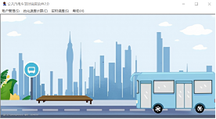
软件主界面顶部设有功能菜单，工作区以公交车辆、站台与城市街景为背景。
选择研究主题，点击图表可放大查看图例和细节。
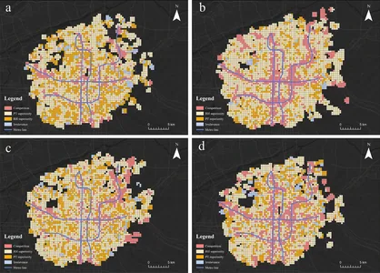
四幅网格地图依次展示西安早高峰、日间工作时段、晚高峰和深夜的出行关系。图中用颜色区分竞争、网约车占优、公共交通占优和无关四类，叠加的地铁线路可帮助辨认轨道走廊周边的变化。
查看论文原文 ↗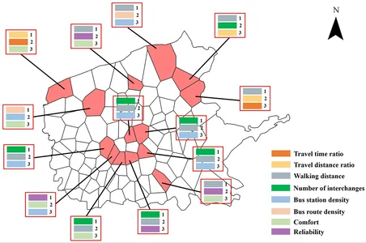
红色标出西安存在公共交通供给缺口的交通小区，每组色条按优先次序列出该区最需改善的三项指标。步行距离在多处入列。中心区域还集中出现了换乘次数和站点密度问题。
查看论文原文 ↗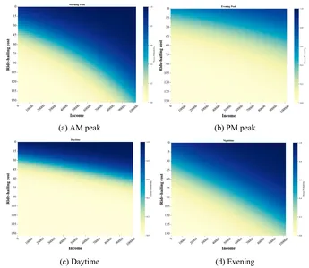
热力图把乘客收入与网约车费用组合起来，比较早高峰、晚高峰、日间和夜间的预测选择概率。早高峰时，费用上升会明显降低低收入乘客选择网约车的概率，高收入乘客在较宽的费用区间内仍有较高的选择概率。
查看论文原文 ↗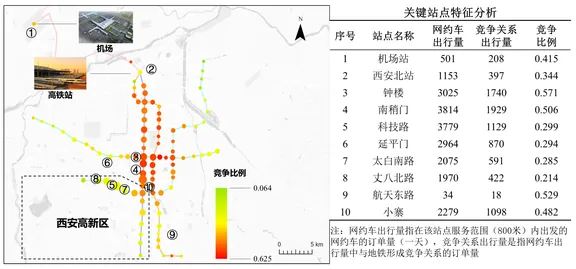
以站点周边 800 米内一天的网约车出发订单为基数，地图用颜色表示其中与地铁形成竞争的订单占比。机场站 501 单中有 208 单被识别为竞争出行，占 41.5%。西安北站对应比例为 34.4%。
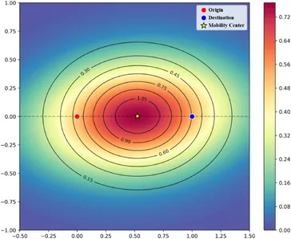
研究将不同行程的起点和终点对齐到同一坐标系，再用高斯混合模型估计换乘位置的概率密度。等值线围成沿起终点连线延伸的椭圆，高密度区集中在两点中部附近。
查看论文原文 ↗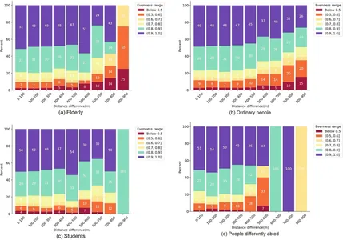
四幅堆叠柱图比较经常乘坐公交的老年乘客、普通乘客、学生和残障乘客。横轴是可选路径之间的长度差，每种颜色代表一个路径选择均匀性区间。普通乘客约在 500 米处出现变化，学生群体则未呈现清晰阈值。
查看论文原文 ↗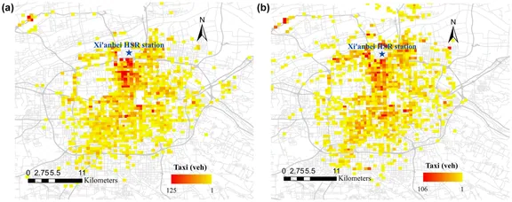
左、右两图分别统计抵达和离开西安北站的出租车接驳行程。每个网格边长 500 米，红色代表较高的出行量。两种方向的高需求网格都集中在车站附近。
查看论文原文 ↗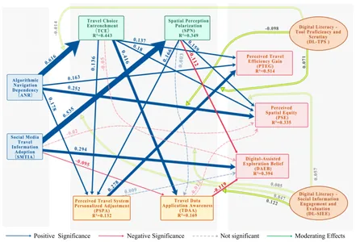
从左向右可追踪数字信息、认知变化与感知可达性之间的路径。模型中，算法导航依赖与出行选择固化呈正相关，社交媒体出行信息的采纳与空间感知极化也呈正相关。
查看论文原文 ↗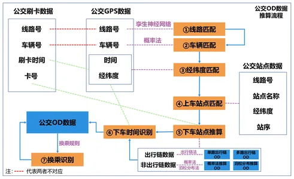
流程从公交刷卡、车辆 GPS 和站点三类数据出发，依次匹配线路、车辆和上车站点，再推算下车站点与时间。结合换乘规则，分段乘车记录可进一步串联成公交出行链。
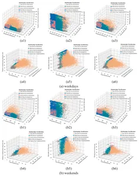
每个点代表一次骑行，颜色区分五类单车与公交关系。图中将骑行时长、综合距离分别与交叉口数量、骑行道路风险或公交候车时间组合，上下两组对照工作日与周末的分类结果。
查看论文原文 ↗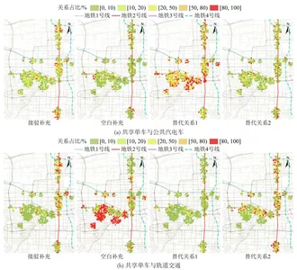
上下两排分别对应公共汽电车和轨道交通。沿每排依次比较接驳补充、空白补充和两类替代关系，颜色表示各关系在网格内的占比。轨道交通服务空白区域的补充关系呈现明显集聚。
查看论文原文 ↗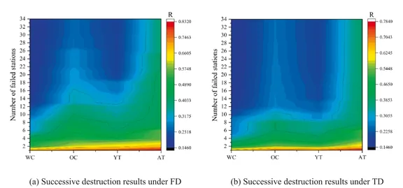
两幅热图比较车站功能失效和拓扑失效。纵轴是累计失效站数，横轴区分四类乘客，颜色表示韧性值。随失效站数增加，各组韧性均下降，模拟中高收入通勤者的降幅快于老年游客。
查看论文原文 ↗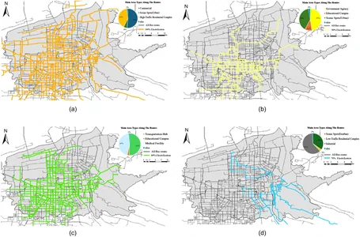
四色线路图分别展示模型建议电动化覆盖率为 100%、90%、80% 和 70% 的西安公交线路，饼图给出沿线主要用地类型的构成。其中 71 条线路适合全天采用电动公交车，其余线路按建议覆盖率安排车辆。
查看论文原文 ↗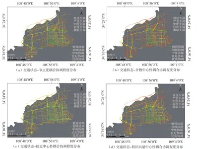
四幅地图分别从节点度、介数中心性、接近中心性和特征向量中心性衡量道路重要度。按介数中心性计算，50.75% 的样本道路属于极度或严重失调。按节点度计算，这一比例为 1.49%。
查看论文原文 ↗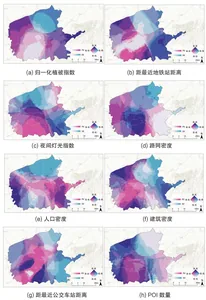
八幅地图以双变量配色对照同一环境要素与实体、虚拟活力的局部联系。以路网密度为例，其正向作用在部分外围地区较强，在路网已密集的核心区减弱。
查看论文原文 ↗点击照片放大，点击空白处返回。
课题组成员参加了多届TRB会议。在海报展区，邓亚娟与团队成员向同行介绍了如何利用公交串车现象评估和预测公交运行状态，也与参会学者讨论了路内停车收费问题。
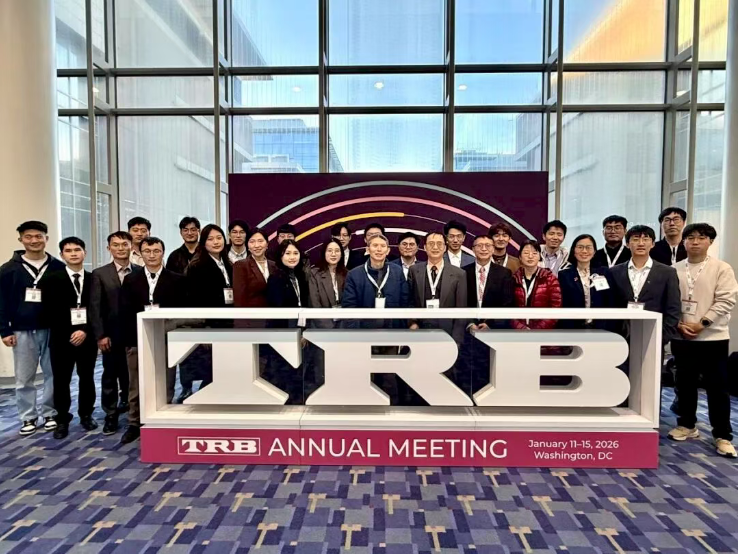
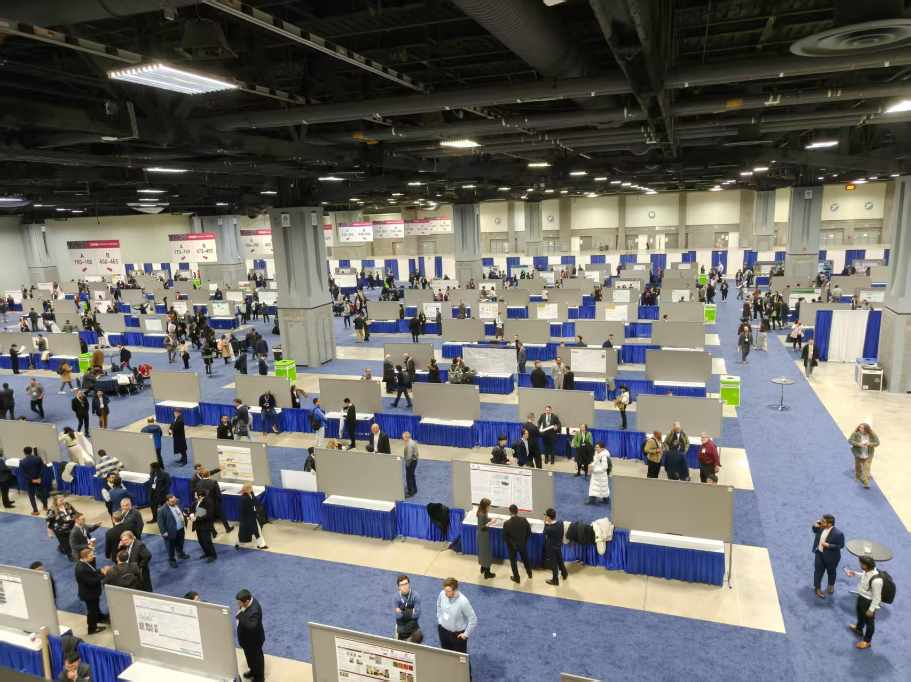
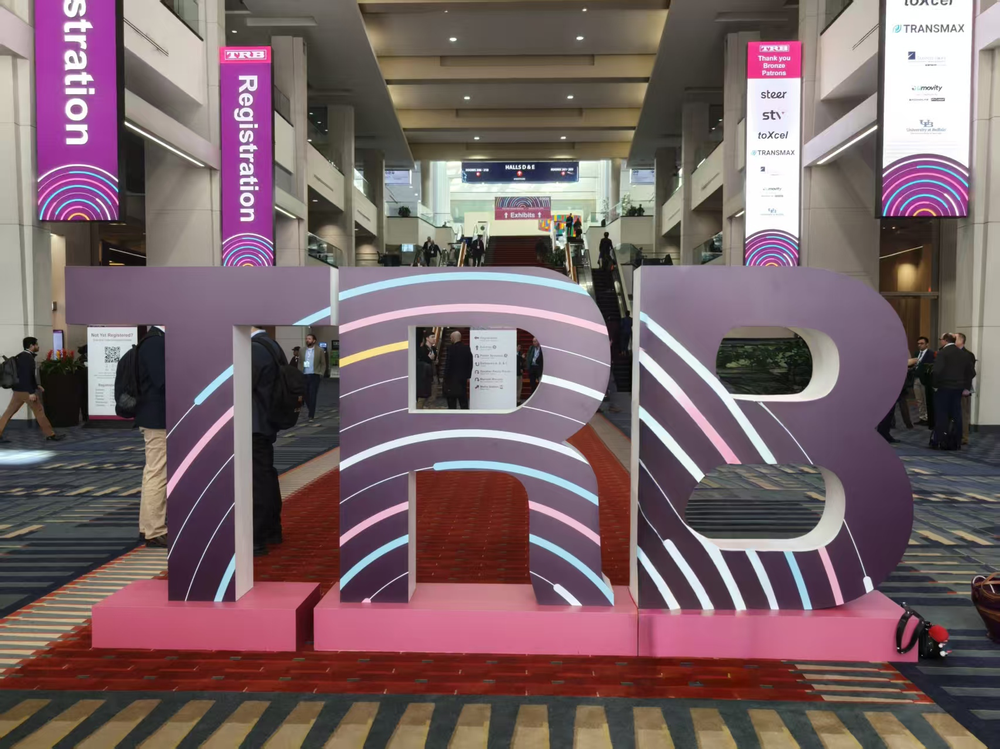
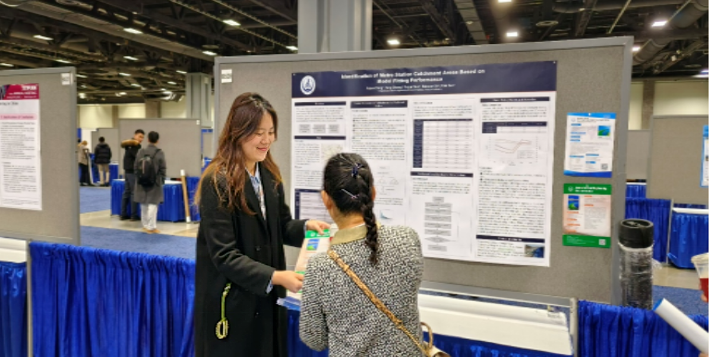
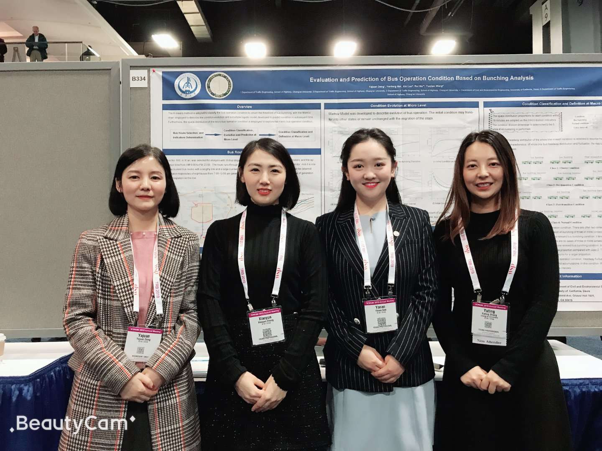
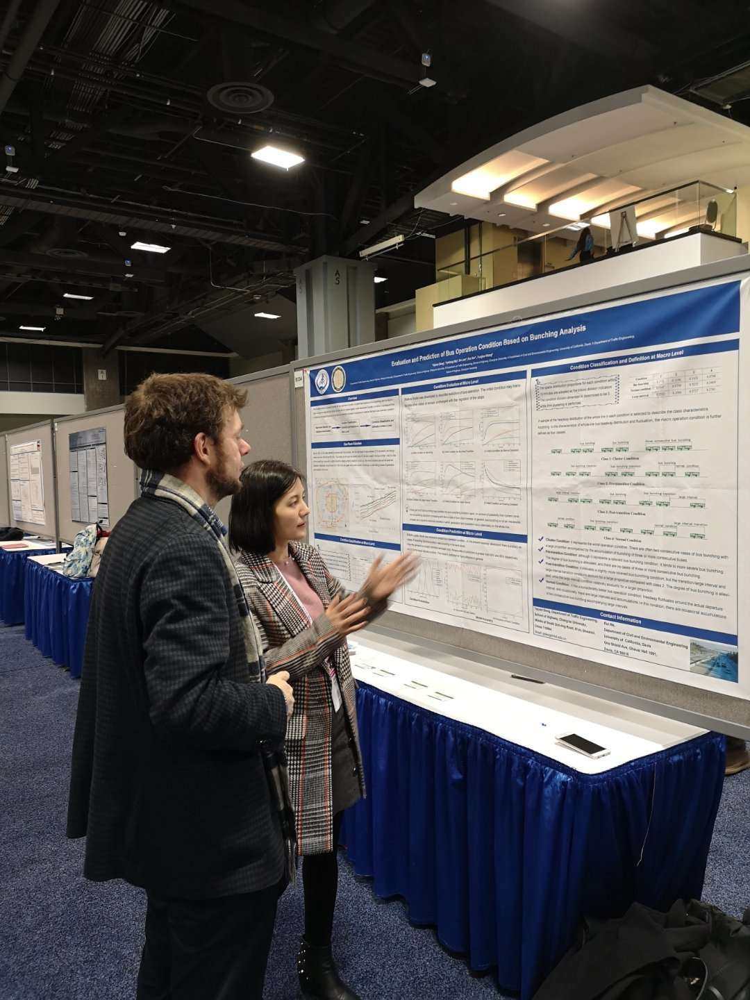

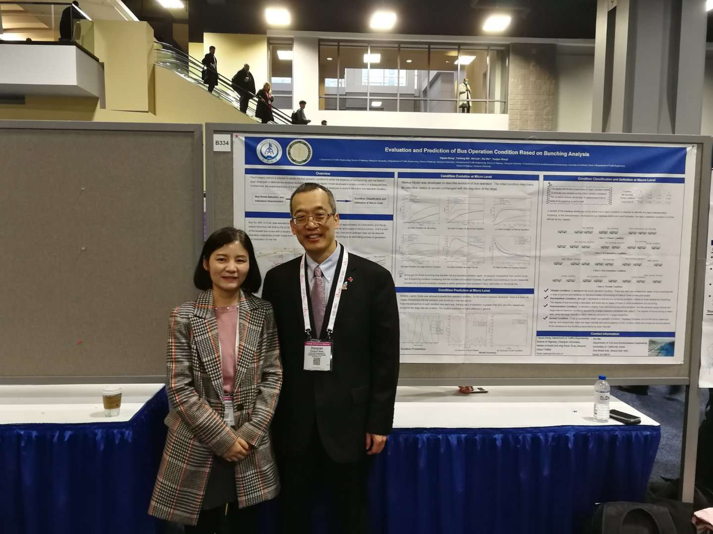

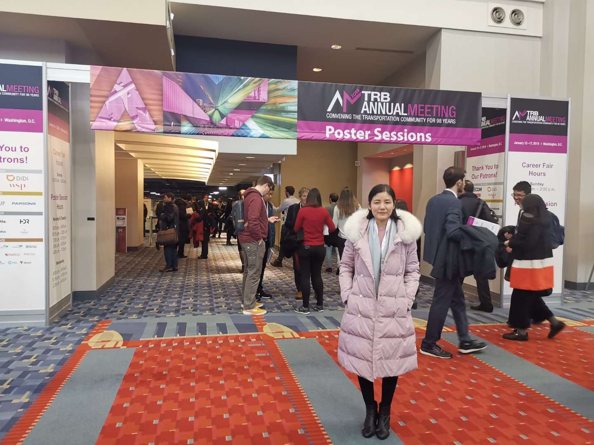
2024 年 6 月 28 日，崔亮斌在青岛作《基于多源指标识别公共交通薄弱区》报告，介绍如何综合多种指标定位公共交通供给薄弱的区域。与会成员在印有大会主题“变革中的新交通”的背景板前合影。


在 2026 年第十七届会议上，梁亦辰对比了两种模型的拟合指标，并展示了参数估计结果。郝可彤以“数字信息改变了什么？”引出研究问题，结合数字导航和社交媒体的例子，讨论人们获取的目的地信息如何影响出行地点和交通方式的选择。
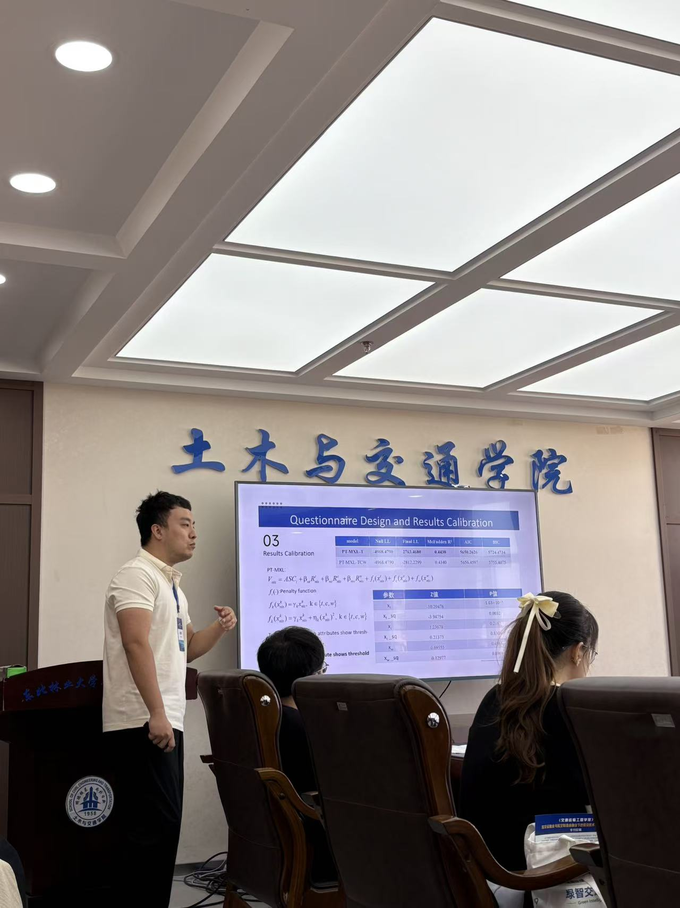

论文按正式卷期年份从近到远排列。在线发表与卷期分属不同年份的，同时列出在线发表日期。JCR 采用 2024 年影响因子的交通相关学科分区，中科院采用 2025 年工程技术大类分区。EI、CSSCI、CSCD 和北大核心标签表示期刊收录类别。
| 论文 | 年份 | 链接 |
|---|---|---|
| Deciphering the geometric quantification and mobility patterns of transfers from a spatial cognition perspective: A continuous space analytical framework Yu Li, Yajuan Deng, Hongchang Liu, Ketong Hao, Yichen Liang · Transport Policy · 190, 104511 · 2026-10-23 在线发表
|
2027 | 查看论文 |
| Prioritizing Urban Bus Electrification with Route-Level Energy Profiling: Two-Stage Decision Framework Yajuan Deng, Xiaolu Niu, Wenjian Jia, Yu Li, Ketong Hao, Yu Song · Journal of Transportation Engineering, Part A: Systems · 152(11), 04026120
|
2026 | 查看论文 |
| Analyzing passenger route evenness: distance difference threshold effects and systemic trends Hongchang Liu, Yajuan Deng, Liangbing Cui · Transportation · 53, 5183–5214 · 2025-10-03 在线发表
|
2026 | 查看论文 |
| Unraveling the nuanced relationships between bike-sharing and public transit: A threshold-based classification framework Yajuan Deng, Yu Li, Toshiyuki Yamamoto, Jie Gao, Shuang Liu, Yue Liu, Ketong Hao · Travel Behaviour and Society · 45, 101314
|
2026 | 查看论文 |
| Formation mechanisms of perceived accessibility in the digital era: A multidimensional S-O-R analysis with digital literacy modulation Ketong Hao, Yajuan Deng, Xiaojie Li, Xiaolu Niu, SiLiang Song, Yu Li · Travel Behaviour and Society · 44, 101270
|
2026 | 查看论文 |
| Resilience assessment of interdependent transit networks: an indifference perception threshold-based approach Yichen Liang, Yajuan Deng, Chen Zhang, Ketong Hao, Yujie Guo, Yu Li, Liangbin Cui · Transportation Research Part D: Transport and Environment · 151, 105128 · 2025-11-29 在线发表
|
2026 | 查看论文 |
| Evaluating the role of ride-hailing in multimodal travel to maximize travel utility in urban areas Yu Bai, Yuanqing Wang, Sen Wei, Yajuan Deng · Travel Behaviour and Society · 42, 101150 · 2025-10-10 在线发表
|
2026 | 查看论文 |
| 道路重要度与交通状态耦合协调关系的影响机理研究 邓亚娟、宋思亮、崔亮斌、李雨、牛晓璐、吴琪 · 华南理工大学学报（自然科学版） · 53(11), 62–76
|
2025 | 查看论文 |
| 城市虚实活力空间分异与非线性关系研究 郝可彤、邓亚娟、刘勇、侯凯、鱼甜甜 · 城市发展研究 · 32(9)
|
2025 | 查看题录 |
| Analysis of Supply Gap in Public Transit Considering Differences with Ride-Hailing Liangbin Cui, Yajuan Deng, Shengxuan Ding, Yichen Liang · Transportation Research Record · 2679(6), 838–855
|
2025 | 查看论文 |
| Beyond binary relationship: Multivariant analysis between ride-hailing and public transit based on multi-sourcing data Liangbin Cui, Yajuan Deng, Yu Bai, Qinxin Peng · Travel Behaviour and Society · 38, 100876 · 2024-08-10 在线发表
|
2025 | 查看论文 |
| 共享单车与公共交通多元关系分类及阈值研究 邓亚娟、刘霜、白钰、刘文凤、崔亮斌 · 交通运输系统工程与信息 · 24(2), 208–216
|
2024 | 查看论文 |
| Travel Mode Choice Behavior for High-Speed Railway Stations Based on Multi-Source Data Yajuan Deng, Yu Bai, Liangbin Cui, Renjie He · Transportation Research Record · 2677(8), 525–540
|
2023 | 查看论文 |
标签依据公开的期刊目录。单篇论文的检索记录以数据库查询结果为准。